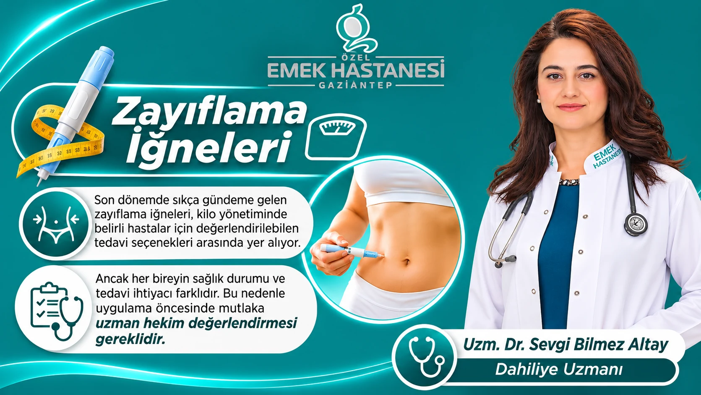

In den letzten Jahren stoßen die zur Behandlung von Adipositas eingesetzten Medikamente und Anwendungen der neuen Generation beim Gewichtsmanagement auf großes Interesse. Insbesondere die im Volksmund als „Abnehmspritze“ bekannten Injektionsbehandlungen zählen bei bestimmten Patientengruppen zu den medizinischen Optionen, die die Gewichtskontrolle unterstützen.
Übergewicht ist jedoch nicht nur eine Frage des äußeren Erscheinungsbildes. Adipositas ist eine chronische Erkrankung, die mit vielen Gesundheitsproblemen wie Diabetes, Bluthochdruck, Herz-Kreislauf-Erkrankungen, Schlafapnoe und Stoffwechselstörungen in Zusammenhang steht und eine umfassende Beurteilung erfordert.
Deshalb sollten Abnehmspritzen nicht als einfache Produkte betrachtet werden, die jeder verwenden kann, der in kurzer Zeit abnehmen möchte. Die Entscheidung über die Behandlung sollte fachärztlich getroffen werden, unter Berücksichtigung der Krankengeschichte, des aktuellen Gewichts, des Stoffwechselzustands und der Bedürfnisse der jeweiligen Person.
Was sind Abnehmspritzen?
Abnehmspritzen sind verschreibungspflichtige Medikamente, die beim Gewichtsmanagement eingesetzt werden und auf die Appetitkontrolle und die Stoffwechselvorgänge wirken.
Ein Teil dieser Medikamente wirkt, indem er die Effekte des Darmhormons GLP-1 nachahmt. Einige Medikamente wirken dagegen neben GLP-1 auch auf andere hormonelle Mechanismen.
Die wesentlichen Wirkungen dieser Behandlungen sind:
- Hilfe bei der Verringerung des Appetits.
- Unterstützung eines länger anhaltenden Sättigungsgefühls.
- Verlangsamung der Magenentleerung.
- Beitrag zu einer geringeren Nahrungsaufnahme.
- Unterstützung der Blutzuckerregulierung.
Infolge dieser Wirkungen kann bei geeigneten Patienten ein Gewichtsverlust erreicht werden. Der Behandlungserfolg hängt jedoch nicht nur vom verwendeten Medikament ab, sondern auch von den Ernährungsgewohnheiten, der körperlichen Aktivität und der Therapietreue der jeweiligen Person.
Wie wirken Abnehmspritzen im Körper?
Im menschlichen Körper sind verschiedene Hormone an der Regulierung von Hunger- und Sättigungsgefühl beteiligt. GLP-1 ist eines der Hormone, die bei diesem Mechanismus eine wichtige Rolle spielen.
Einige der zur Gewichtsabnahme eingesetzten Medikamente ahmen die Effekte des Hormons GLP-1 nach und beeinflussen so die Hirnregionen, die mit der Appetitkontrolle zusammenhängen. Dadurch kann das Hungergefühl abnehmen, und es kann möglich werden, weniger Nahrung zu sich zu nehmen.
Außerdem kann die verlangsamte Magenentleerung dazu beitragen, dass das Sättigungsgefühl nach dem Essen länger anhält.
Einige Medikamente haben auch Wirkungen, die dabei helfen, den Blutzuckerspiegel zu regulieren. Deshalb sind die Art des verwendeten Medikaments und der Gesundheitszustand der jeweiligen Person bei der Planung der Behandlung von großer Bedeutung.
Welche möglichen Vorteile haben Abnehmspritzen?
Medikamentöse Behandlungen, die bei geeigneten Patienten und unter ärztlicher Kontrolle durchgeführt werden, können beim Management von Adipositas verschiedene Vorteile bieten.
Kann bei der Appetitkontrolle helfen
Ein ständiges Hungergefühl und ein unkontrolliertes Verlangen nach Essen können das Abnehmen erschweren. Medikamente, die auf die appetitregulierenden Mechanismen wirken, können das Hungergefühl verringern und so die Kontrolle über die Ernährung unterstützen.
Kann den Gewichtsverlust unterstützen
Diese Medikamente können zu einer geringeren Energieaufnahme beitragen und so den Gewichtsverlust unterstützen. Die erzielten Ergebnisse unterscheiden sich je nach verwendetem Medikament, Behandlungsdauer und den individuellen Merkmalen der jeweiligen Person.
Kann zur Blutzuckerkontrolle beitragen
Einige GLP-1-basierte Behandlungen können insbesondere bei geeigneten Patienten mit Typ-2-Diabetes bei der Blutzuckerregulierung helfen.
Allerdings hat nicht jedes Medikament zur Gewichtsabnahme in der Diabetesbehandlung und nicht jedes Diabetesmedikament in der Adipositasbehandlung denselben Verwendungszweck.
Kann die Verbesserung der Stoffwechselgesundheit unterstützen
Der bei der Adipositasbehandlung erreichte Gewichtsverlust kann zu positiven Veränderungen bei Stoffwechselwerten wie Blutdruck, Blutfetten und Blutzucker beitragen.
Das Ausmaß dieser Wirkungen hängt vom aktuellen Gesundheitszustand der jeweiligen Person und ihrem Ansprechen auf die Behandlung ab.
Kann das langfristige Gewichtsmanagement unterstützen
Adipositas ist kein Gesundheitsproblem, das sich allein mit kurzfristigen Diäten lösen lässt. Bei geeigneten Patienten kann eine medikamentöse Behandlung zusammen mit einer Ernährungsumstellung und körperlicher Aktivität Teil eines langfristigen Gewichtsmanagements sein.
Für wen sind Abnehmspritzen geeignet?
Abnehmspritzen sind nicht für jeden geeignet. Diese Behandlungen können in der Regel bei bestimmten Gruppen erwachsener Patienten in Betracht gezogen werden, bei denen Adipositas diagnostiziert wurde oder die gewichtsbedingte Gesundheitsprobleme haben.
Die allgemeinen Beurteilungskriterien unterscheiden sich zwar je nach den zugelassenen Anwendungsbedingungen der Medikamente, lauten aber bei einigen Behandlungen zum Gewichtsmanagement wie folgt:
- Ein Body-Mass-Index von 30 kg/m² oder mehr.
- Ein Body-Mass-Index von 27 kg/m² oder mehr und mindestens ein gewichtsbedingtes Gesundheitsproblem.
- Keine ausreichende Gewichtskontrolle trotz Änderungen des Lebensstils.
- Kein gesundheitlicher Zustand, der der Anwendung des Medikaments entgegenstehen könnte.
Diese Kriterien sind nicht für alle Medikamente gleich. Welche Behandlung geeignet ist, wird anhand der zugelassenen Anwendungsgebiete des jeweiligen Medikaments und der klinischen Beurteilung des Patienten entschieden.
Haben Abnehmspritzen Nebenwirkungen?
Wie bei jeder medikamentösen Behandlung können auch Abnehmspritzen unerwünschte Wirkungen haben.
Die häufigsten Nebenwirkungen betreffen in der Regel das Verdauungssystem:
- Übelkeit.
- Erbrechen.
- Durchfall.
- Verstopfung.
- Bauchschmerzen.
- Blähungen und Verdauungsbeschwerden.
Diese Beschwerden können vor allem zu Beginn der Behandlung oder während einer Dosiserhöhung auftreten.
Seltener können auch erhebliche Nebenwirkungen wie Erkrankungen der Gallenblase, eine Bauchspeicheldrüsenentzündung und schwerwiegende Probleme des Magen-Darm-Trakts auftreten.
Deshalb sollte die Krankengeschichte der jeweiligen Person vor der Behandlung eingehend beurteilt werden. Bei Anzeichen wie starken, nicht abklingenden Bauchschmerzen, anhaltendem Erbrechen oder einem erheblichen Flüssigkeitsverlust sollte unverzüglich medizinische Hilfe in Anspruch genommen werden.
Was sollte bei der Anwendung von Abnehmspritzen beachtet werden?
Damit die Behandlung sicher und wirksam fortgeführt werden kann, sollten einige wichtige Punkte beachtet werden.
- Fachärztliche Beurteilung: Vor der Anwendung des Medikaments sollten das Gewicht, die bestehenden Erkrankungen, die eingenommenen Medikamente und die Stoffwechselwerte der jeweiligen Person beurteilt werden.
- Die richtige Medikamentenwahl: Die Bedürfnisse jedes Patienten sind unterschiedlich. Ein Medikament, das für eine Person geeignet ist, ist für eine andere möglicherweise nicht geeignet.
- Regelmäßige Kontrolle: Während der Behandlung sollten Gewichtsveränderungen, der Ernährungszustand, der Blutzucker und möglicherweise auftretende Nebenwirkungen kontrolliert werden.
- Ernährungsweise: Die medikamentöse Behandlung ersetzt keine gesunde Ernährung. Es sollte ein ausgewogener und individuell passender Ernährungsplan eingehalten werden.
- Körperliche Aktivität: Regelmäßige Bewegung ist ein wichtiger Bestandteil des Gewichtsmanagements und der Erhaltung der allgemeinen Gesundheit.
- Medikamente nicht unbedacht anwenden: Die Verwendung von Medikamenten, die einer anderen Person verschrieben wurden, oder der Griff zu Produkten unklarer Herkunft, die über das Internet bezogen werden, kann ernsthafte Gesundheitsrisiken mit sich bringen.
Nimmt man nach dem Absetzen von Abnehmspritzen wieder zu?
Eine der Fragen, die Patienten am meisten beschäftigen, ist, ob man nach dem Ende der Behandlung wieder zunimmt.
Adipositas ist eine chronische Erkrankung, die langfristige Kontrollen erfordert. Auch wenn es möglich ist, mit einer medikamentösen Behandlung den Appetit unter Kontrolle zu bringen und einen Gewichtsverlust zu erreichen, kann der Appetit nach dem Absetzen der Behandlung wieder zunehmen.
Das kann bei manchen Menschen dazu führen, dass sie einen Teil des abgenommenen Gewichts wieder zunehmen.
Deshalb sollte das Beenden oder Ändern der Behandlung unbedingt ärztlich geplant werden. Die Anwendung von Medikamenten sollte nicht für sich allein betrachtet werden, sondern zusammen mit nachhaltigen Änderungen der Ernährung und des Lebensstils.
Sind Abnehmspritzen für jeden sicher?
Nein. Abnehmspritzen sind nicht für jeden Menschen eine geeignete Behandlungsoption.
Insbesondere während der Schwangerschaft und der Stillzeit ist ihre Anwendung nicht angebracht. Außerdem ist bei Menschen mit bestimmten hormonellen, stoffwechselbedingten, Verdauungs- und Bauchspeicheldrüsenerkrankungen eine besondere Beurteilung erforderlich.
Je nach den Inhaltsstoffen des verwendeten Medikaments kann es auch unterschiedliche Warnhinweise und Anwendungsbeschränkungen geben.
Deshalb ist es nicht richtig, anhand von in sozialen Medien geteilten Erfahrungsberichten ein Medikament auszuwählen oder die Dosis festzulegen.
Der Zusammenhang zwischen Abnehmspritzen und gesundem Gewichtsmanagement
Erfolgreiches Gewichtsmanagement bedeutet nicht nur, dass die Zahl auf der Waage sinkt. Das eigentliche Ziel ist es, den allgemeinen Gesundheitszustand der jeweiligen Person zu verbessern, die Stoffwechselrisiken zu verringern und einen nachhaltigen Lebensstil zu entwickeln.
In diesem Prozess gilt:
- Es sollte ein individuell passender Ernährungsplan erstellt werden.
- Regelmäßige körperliche Aktivität sollte zur Gewohnheit werden.
- Auf den Erhalt der Muskelmasse sollte geachtet werden.
- Ein geregelter Schlaf sollte unterstützt werden.
- Bei Bedarf sollte psychologische und verhaltensbezogene Unterstützung angeboten werden.
- Die Behandlungsergebnisse sollten regelmäßig beurteilt werden.
Abnehmspritzen können bei geeigneten Patienten Teil dieses umfassenden Behandlungsplans sein.
Häufig gestellte Fragen
Führen Abnehmspritzen in kurzer Zeit zu einem Gewichtsverlust?
Der Gewichtsverlust ist von Person zu Person unterschiedlich. Während sich bei manchen Patienten in den ersten Monaten eine Veränderung zeigt, kann das Ansprechen auf die Behandlung bei anderen langsamer sein. Statt einen schnellen Gewichtsverlust anzustreben, sollte man sich auf gesunde und nachhaltige Ergebnisse konzentrieren.
Wirken Abnehmspritzen auch ohne Diät?
Die Medikamente können die Appetitkontrolle unterstützen, ersetzen aber keine gesunde Ernährung. Die besten Ergebnisse werden bei Behandlungen angestrebt, die zusammen mit einer passenden Ernährung und körperlicher Aktivität durchgeführt werden.
Machen Abnehmspritzen abhängig?
Diese Medikamente gelten nicht als abhängig machende Substanzen im klassischen Sinne. Nach dem Absetzen der Behandlung können jedoch eine Zunahme des Appetits und eine erneute Gewichtszunahme auftreten.
Wie lange sollten Abnehmspritzen angewendet werden?
Die Behandlungsdauer wird je nach verwendetem Medikament, dem Ansprechen der jeweiligen Person, den Nebenwirkungen und den gesundheitlichen Zielen festgelegt. Bei manchen Patienten kann eine langfristige Behandlung erforderlich sein.
Werden Abnehmspritzen nur bei übergewichtigen Menschen angewendet?
Der Einsatzbereich dieser Medikamente richtet sich nach den zugelassenen Anwendungsgebieten des jeweiligen Produkts. Für Menschen, die nur aus ästhetischen Gründen ein paar Kilo abnehmen möchten, sollten sie nicht als geeignete Option betrachtet werden.
Kann jeder Abnehmspritzen anwenden?
Nein. Schwangerschaft, Stillzeit, bestimmte Erkrankungen, andere eingenommene Medikamente und persönliche Risikofaktoren können die Behandlungsentscheidung beeinflussen. Eine ärztliche Beurteilung ist unbedingt erforderlich.
Fazit: Bewusste und individuelle Behandlung im Gewichtsmanagement
Abnehmspritzen gehören zu den sich weiterentwickelnden medizinischen Ansätzen in der Adipositasbehandlung und sind Optionen, die bei geeigneten Patienten wirksam sein können. Dass sie bei der Appetitkontrolle helfen, das Sättigungsgefühl unterstützen und bei manchen Patienten positive Effekte auf die Stoffwechselwerte haben können, steigert das Interesse an diesen Behandlungen.
Allerdings ersetzt kein Medikament für sich allein eine gesunde Lebensweise. Die richtige Patientenauswahl, eine passende Medikamentenplanung, regelmäßige ärztliche Kontrollen und Änderungen des Lebensstils sind die wesentlichen Bestandteile der Behandlung.
Im Fachbereich Innere Medizin des Privatkrankenhauses Emek Gaziantep können Sie mit Dr. med. Sevgi Bilmez Altay über Gewichtsmanagement und die Behandlung von Adipositas sprechen und eine fachärztliche Beurteilung zu den für Ihren Gesundheitszustand geeigneten Behandlungsmöglichkeiten erhalten.
Dieser Inhalt wurde zu allgemeinen Informationszwecken erstellt. Medikamente zur Gewichtsabnahme sind verschreibungspflichtige Arzneimittel. Diagnose, Medikamentenwahl und Behandlungsplan sollten nach einer fachärztlichen Beurteilung festgelegt werden.